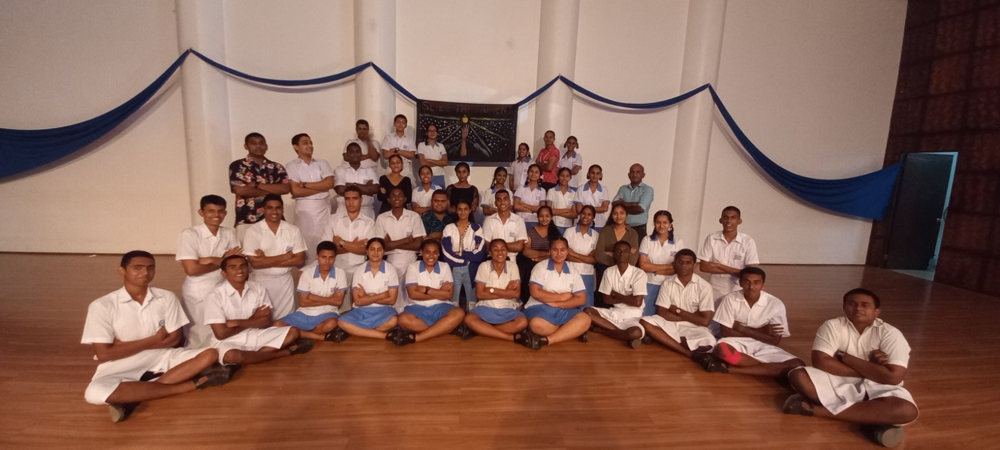
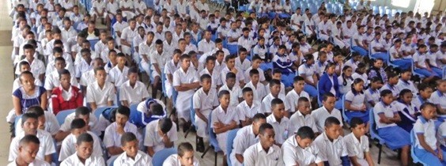

College History & Foundation
Xavier College was established in 1953 as a boys' secondary school by the Catholic Archdiocese of Suva to provide Christian education, particularly to the Indian youth in the western division of Fiji. It was entrusted to the Columban Fathers, whose vision established the school's enduring spirit of academic rigor and pastoral care.
In 1970, co-education was introduced to adapt to the changing needs of the time, welcoming young women to study alongside young men in a shared pursuit of learning and leadership.
On January 1st, 2021, Xavier College, Ba was handed over from the Parish of Christ the King to the founding of a unique and multifaith charity arm called ‘From Mind to Heart’, which continues to provide groceries, educational supplies, and humanitarian assistance to students and families in times of need.

Historical campus grounds of Xavier College, Ba

College facilities and educational environment
St. Francis Xavier & Feast Day Traditions
On December 3rd, the school observed a historic milestone with its full celebration of the Feast Day of St. Francis Xavier. Francis Xavier was a 16th-century Spanish Jesuit missionary and one of the first seven companions of St. Ignatius of Loyola. He travelled extensively across Asia and died at Shangchuan Island in 1552, serving as the co-patron of Catholic missions worldwide.
The management and teaching staff, embracing students of diverse religious traditions, coordinated interfaith reflection, classroom presentations, floral tributes at his statue, and communal gatherings supported by the Parents and Friends Association and the Catholic community of Namosau.